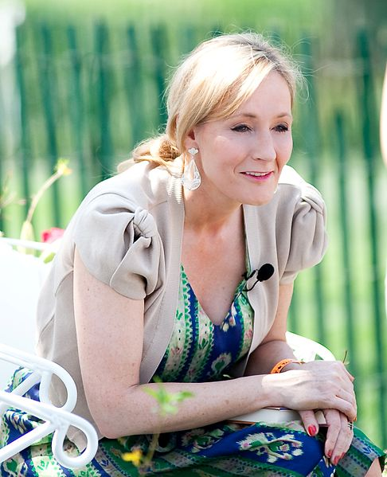

Harry Potter
- Harry Potter
- J.K.Rowling
- fantastic beasts
J.K. Rowling
Joanne Rowling, CH, OBE, FRSL, FRCPE, writing under the pen names J. K. Rowling and Robert Galbraith, is a British novelist, philanthropist, film and television producer and screenwriter best known for writing the Harry Potter fantasy series. The books have won multiple awards, and sold more than 500 million copies,[2] becoming the best-selling book series in history.[3] They have also been the basis for a film series, over which Rowling had overall approval on the scripts[4] and was a producer on the final films in the series.
